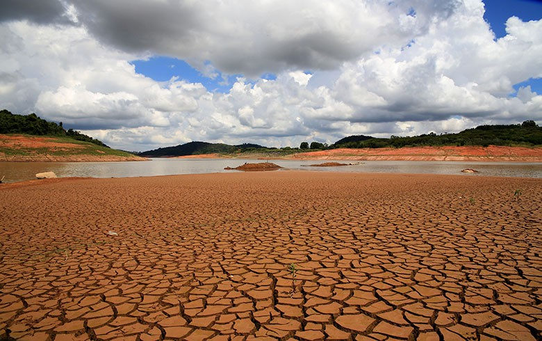
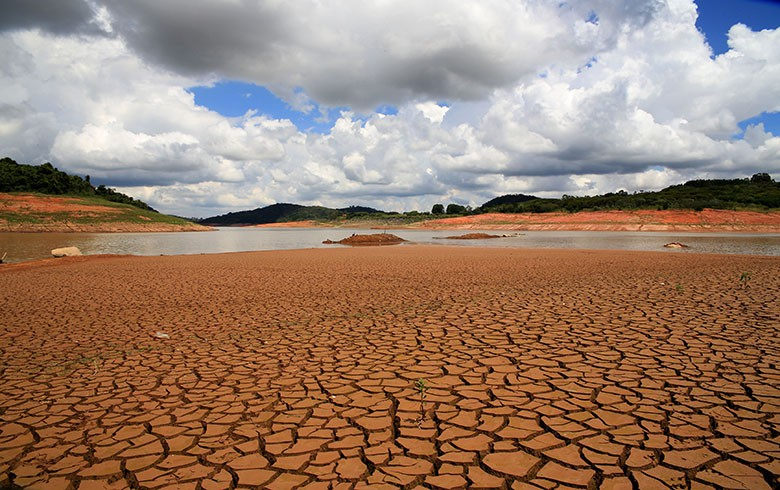
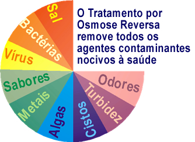
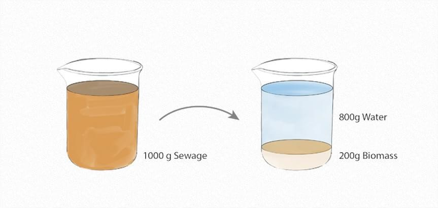
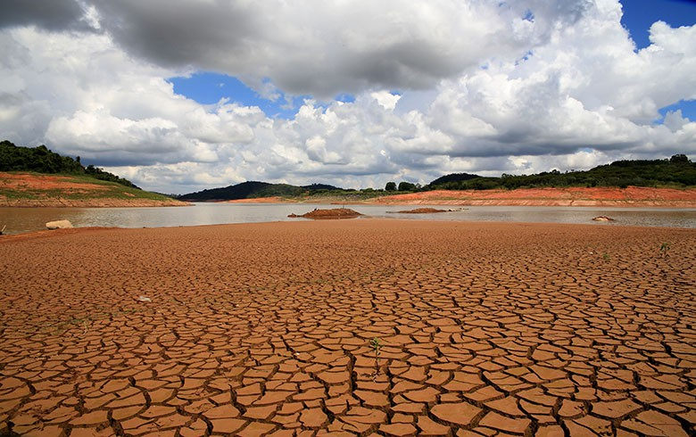

Crise da Água no Sudeste Brasileiro

Curiosidades Sobre a Água
Crise da Água no Sudeste Brasileiro

Curiosidades Sobre a Água
 Osmose Reversa
Osmose Reversa
OmniProcessor

Crise da Água no Sudeste Brasileiro

Curiosidades Sobre a Água
Osmose ReversaDe Residual para Potável
Você tem coragem de beber água que até alguns minutos antes era cocô humano? Bom, Bill Gates tem. Afinal, vale tudo para mostrar que o OmniProcessor funciona. A máquina é criação da Janicki Bioenergy, uma empresa que quer mudar o sistema de tratamento de água e saneamento no mundo através de tecnologias mais simples e sustentáveis.
Em seu blog pessoal, Gates descreve que viu “montes de fezes” serem postas em uma caixa grande, entrarem na máquina e serem fervidas e tratadas. “Alguns minutos depois, eu tive a prova do resultado: um copo de deliciosa água potável”, escreveu.
O caldo nojento dos esgotos é composto em média por 80% de água e apenas 20% de biomassa fecal. Ou seja, em 1 kg desse conteúdo, nós perdemos 800 g por causa de uma parcela mínima que contamina tudo. E é aí que entra o OmniProcessor.
Durante o processo, que dura apenas cinco minutos, a máquina transforma água contaminada de fezes em água limpa e energia elétrica — deixando para trás apenas cinzas. No vídeo, Gates explica que mais de 2,5 bilhões de pessoas no mundo não têm acesso a saneamento e que ele pediu para que alguns “engenheiros brilhantes” resolvessem esse problema – e que um deles propôs essa invenção como solução.
Fonte(s) TecMundo